Seismic · 2023–2024
Ask Aura — AI Chat Room
Seismic's reporting data was locked behind dashboards and CSV exports. I led the design that turned it into a conversation: ask Aura a question in plain language, get a table, a chart and the SQL behind it — plus an honest line about what the AI can and can't know.
Client
Seismic
Year
Sep 2023 – May 2024 · ~8 months
Role
Lead Product Designer, Insights & Aura
Team
Product, engineering & data science on Insights
Platform
Web · Seismic Insights · Snowflake
Focus
AI · Conversational UX · Analytics
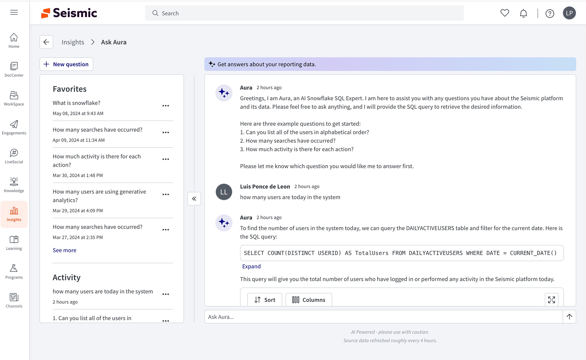
In one line
Generative Analytics lets people chat with Aura, Seismic's AI, about their own platform data — who is active, what's being searched, which content lands. Over four iterations I took it from an engineering prototype to a shipped surface in Seismic Insights, and set the patterns later Aura surfaces built on.
Context and the problem
Seismic Insights is where enablement leaders and admins go to understand how their platform is used. Before Aura, getting an answer meant one of three routes: a fixed analytics app that might not cover your question, the LiveInsights BI tool that most people never learned, or a raw CSV export from Reports & Data that you took into Excel.
Generative AI promised a fourth route — ask in plain language. Engineering had a working prototype: a model that could write Snowflake SQL against a curated slice of the data model. What it didn't have was a product.
A chat box removes every affordance a dashboard gives you. There's no menu saying what's possible, so the interface has to teach it.
The constraints shaped everything that followed:
- A deliberately small dataset. Aura could only answer against tables we had curated for it. Anything outside that would fail or, worse, look like it succeeded.
- Data that wasn't live. Source data refreshed roughly every four hours, so "today" didn't quite mean today.
- A trust problem specific to analytics. A wrong number in a report gets forwarded to a VP. Users needed a way to check the answer, not just read it.
- An existing design system. The surface had to be built from Seismic's Mantle components and sit inside the Insights information architecture, not float beside it.
My role and what I owned
I was the lead product designer on Ask Aura from the first concept review through the version that shipped.
- I owned the end-to-end experience: the entry point on the Insights page, the chat room layout, the answer anatomy (table, chart, SQL, feedback), the Favorites and Activity module, empty states, responsive and panel behaviour, and the disclaimer and timestamp patterns.
- I partnered with product management on scope and pilot rollout, and with the data team on which questions the curated dataset could answer well enough to suggest.
- Engineering and data science owned the model, the prompt and SQL generation, and the Snowflake pipeline behind it.
V1 was designed and piloted in Galileo, a demo tenant, which is why its branding differs from the Seismic screens. Names and figures in the tables are demo or internal test data.
Goals, and how we'd know
Because this was a new capability, not a redesign, success had to be defined as behaviour rather than a lift on an existing number:
- First question answered without help. A new user should land, understand what to ask, and get a useful answer on the first try. Measured in the pilot by how often a first question needed rephrasing.
- Answers people trust enough to use. Measured by thumbs up/down feedback on each response and by exports of answer tables.
- Coming back. Measured by repeat sessions and by how many questions were saved as favorites to re-run.
- Commercial pull. Whether Aura showed up in sales conversations and deals, not just demos.
Research, and the three things that changed direction
I started from the engineering prototype and walked through it as a first-time user would, then reviewed recordings of internal testers. Three findings shaped the design.
1. It was a demo of the model, not a tool for the user
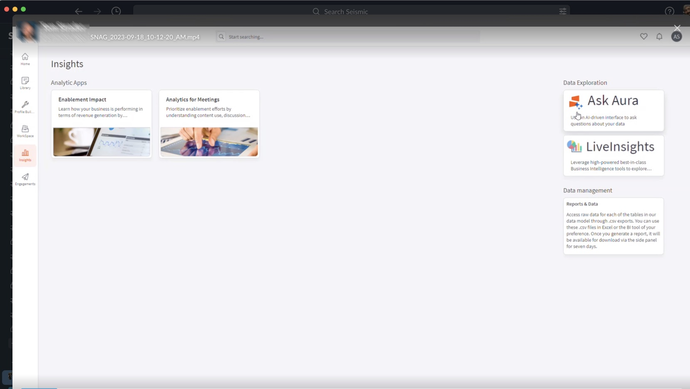
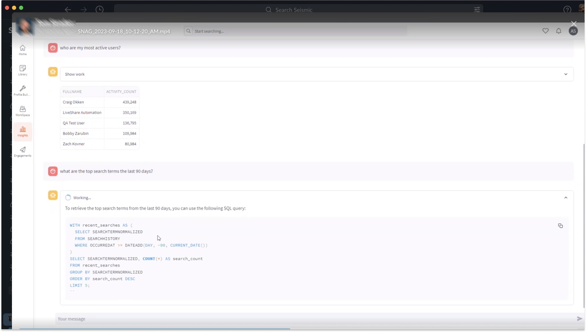
2. An empty text box is an open-ended promise
Given a blank input, testers asked what they would ask a colleague: broad strategy questions the curated dataset could never answer. The failure wasn't the model. It was that nothing on the screen said where the edges were.
3. Analysts wanted proof; everyone else wanted the number
Admins comfortable with SQL wanted to see the query to check it. Enablement managers didn't want to see it at all. Showing SQL by default buried the answer for one group; hiding it removed the only means of verification for the other.
Strategy and the decisions that mattered
Decision 1 — Teach capability by example, and narrow the promise
Rather than explain what Aura can do, show it. The empty state leads with three suggested questions drawn from what the curated data answers well. In the shipped version Aura introduces itself and names three starter questions in its first message. And the banner copy narrowed over time, from ask questions about your data to Get answers about your reporting data — one word that sets a far more accurate expectation.
Decision 2 — Show the work, but fold it
SQL went on a journey across the versions: printed in full in the prototype, hidden behind Show code in V1, then a single-line preview with Expand in V2. The one-line version was the compromise that held: the answer and a plain-English explanation lead, the query is visible enough to signal "this is checkable", and one click gives the analyst the whole thing with a Copy code action.
Decision 3 — Be honest about limits, in the interface, every time
Two lines sit permanently under the input: AI Powered – please use with caution and Source data refreshed roughly every 4 hours. There was pressure to drop the caution line as launch approached because it undersold the feature. I argued to keep it: an analytics tool that is wrong once without warning loses its users for good. I specified the freshness message as a Mantle tooltip and a set of relative timestamp formats so it read as information, not a legal footnote.
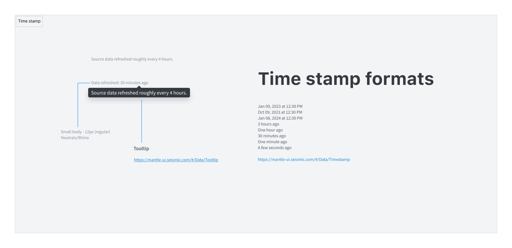
Decision 4 — Treat answers as objects, not messages
In a chat, a good answer scrolls away. For analytics that's a loss: the question who are my most active users is one you'll ask again next month. So every answer carries a small toolbar — favorite, thumbs up/down, regenerate, export, table/chart toggle — and a Favorites and Activity panel keeps the questions worth re-running.
Design process and solution
V1 — the pilot
V1 put the four decisions in front of real users as quickly as possible, in a demo tenant.
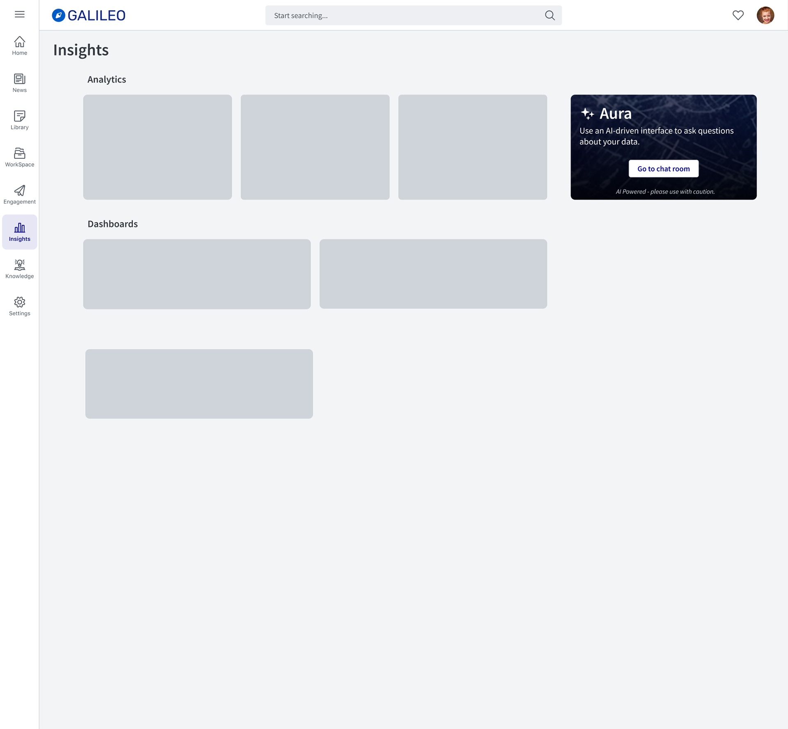
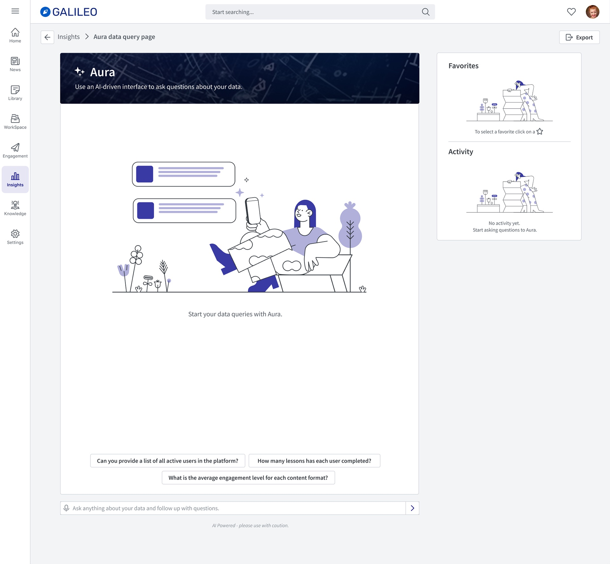
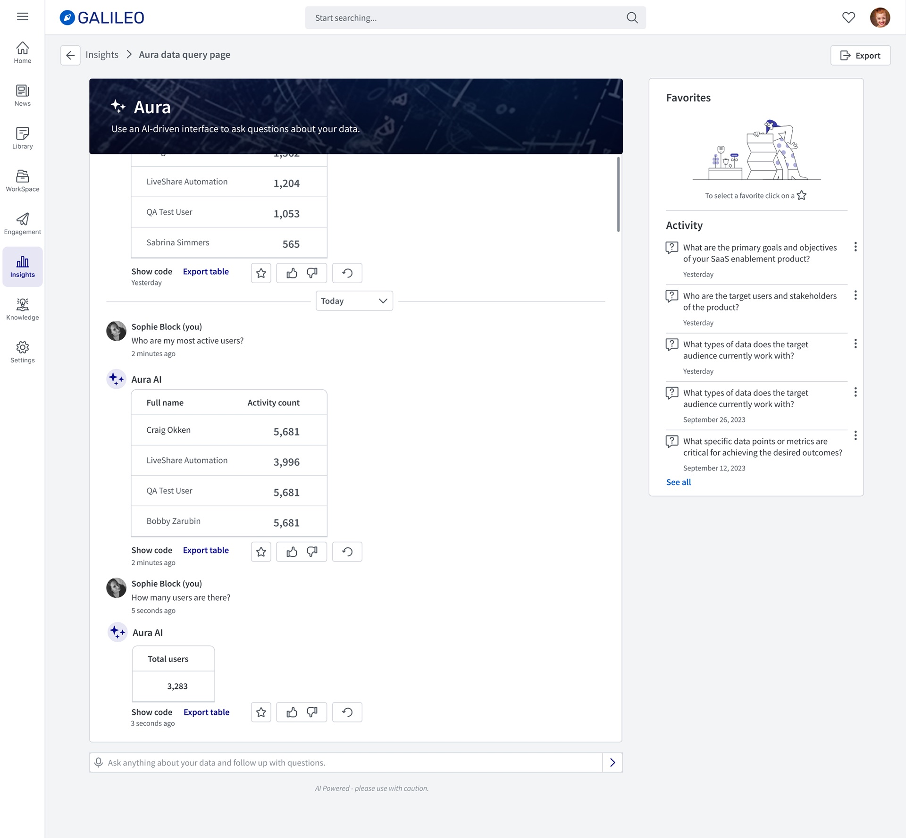
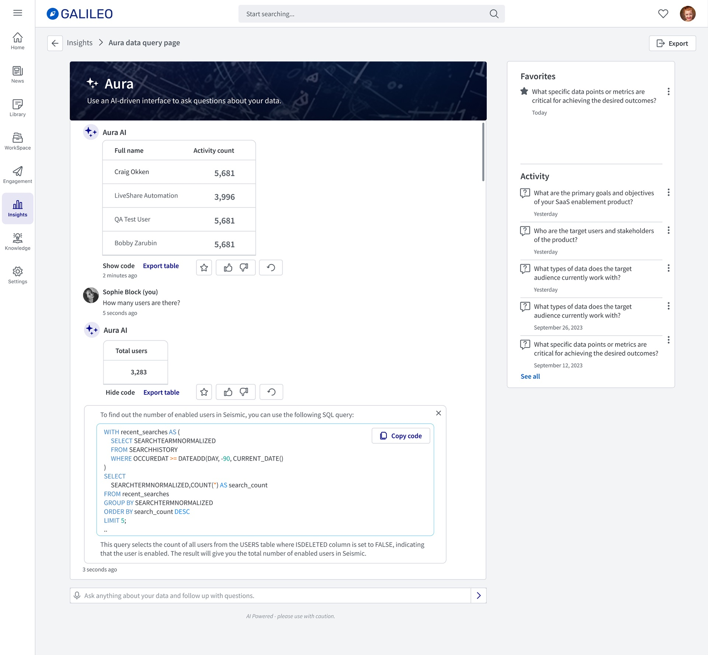
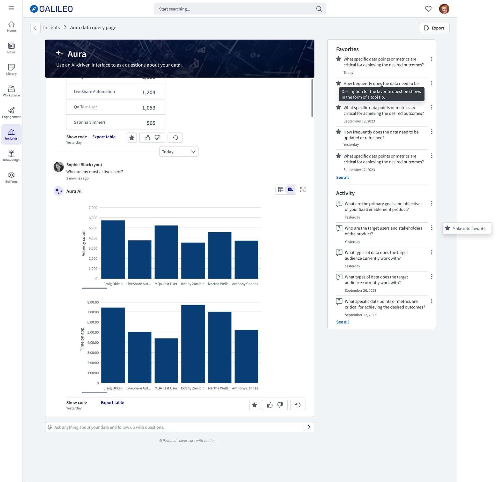
V2 — revised layout, interactions and branding
V2 moved from the demo tenant into Seismic proper, and reworked the parts the pilot showed were fighting the user.
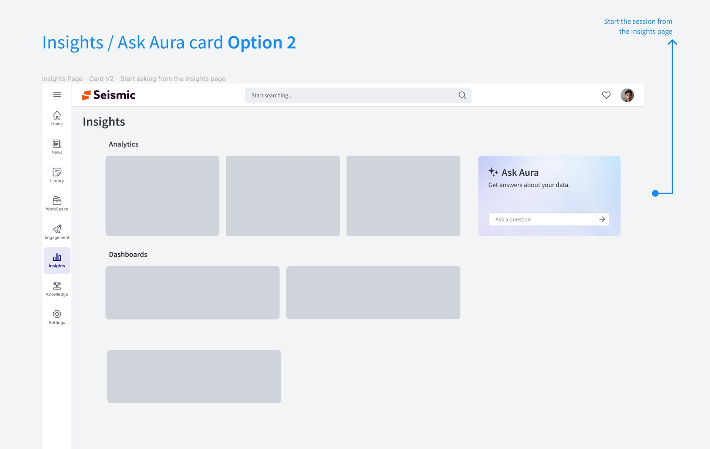
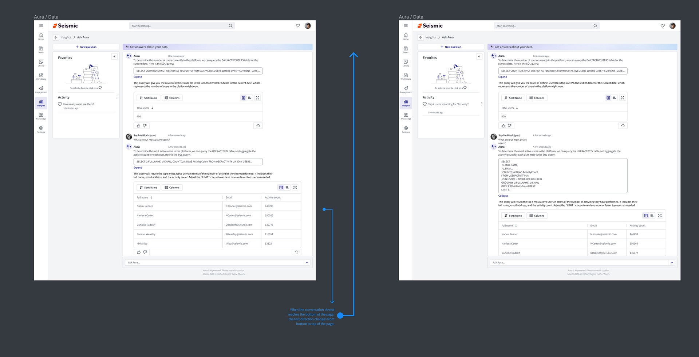
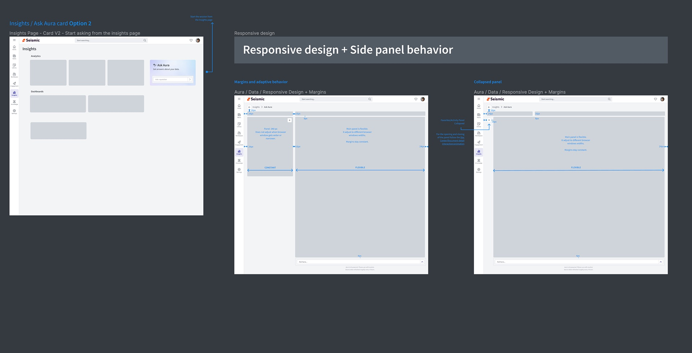
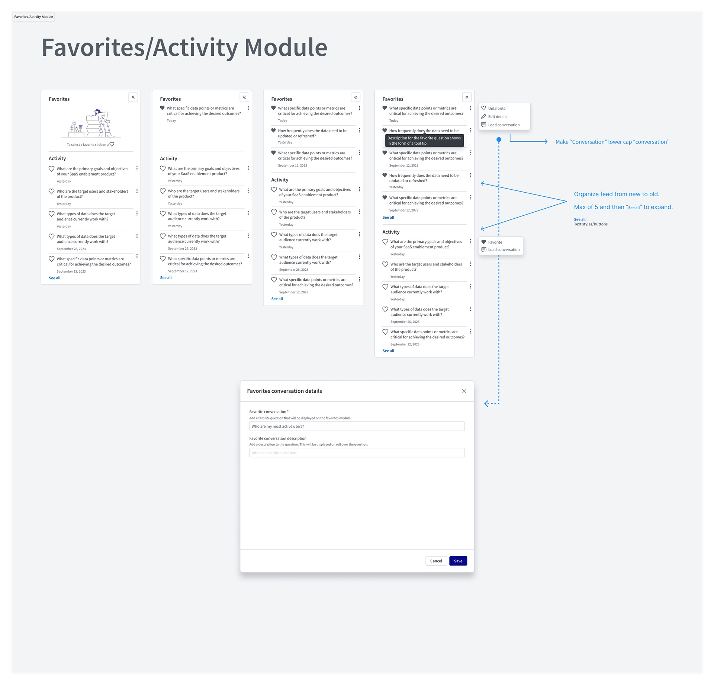
In product

Validation and iteration
We thought an open invitation would drive exploration. It drove dead ends.
We thought the V1 promise — ask questions about your data — plus a free-text box would encourage people to explore. We learned in the pilot that it did the opposite: people asked broad questions the curated dataset couldn't answer, got a weak result, and concluded the feature didn't work. So we did three things in V2: narrowed the copy to reporting data, had Aura open every session by stating its role and three questions it answers well, and kept those questions one click away.
Hidden code was trusted less, not more
V1 hid SQL completely behind Show code to keep answers clean. Pilot users who cared about accuracy didn't discover it, and the ones who did had to expand every answer to check it. The one-line preview in V2 made the evidence visible at a glance without taking over the response.
A separate destination was one step too many
The V1 card sent people to a chat room before they could ask anything. Moving the input onto the Insights card itself (option 2) meant the first question could be typed the moment the idea occurred, and the chat room became the place the conversation continued rather than a place you had to go.
Outcome and impact
Usage metrics for Ask Aura are internal, so the evidence here is directional: what leadership said unprompted, and where Aura showed up commercially.
"One of the most game changing technologies for our industry." — VP, Incubation Engineering
"One of the KOOLEST new features we have released… So easy, so powerful." — SVP, Products, Platform and Solutions
Within the same cycle, Aura was named among the capabilities in a new platform deal: Royal London Asset Management, one of the UK's leading fund managers, joining at $1.34M average ARR and $6.72M TCV over five years. Aura was one line in a broad deal, not the reason for it — but it was on the list a customer bought.
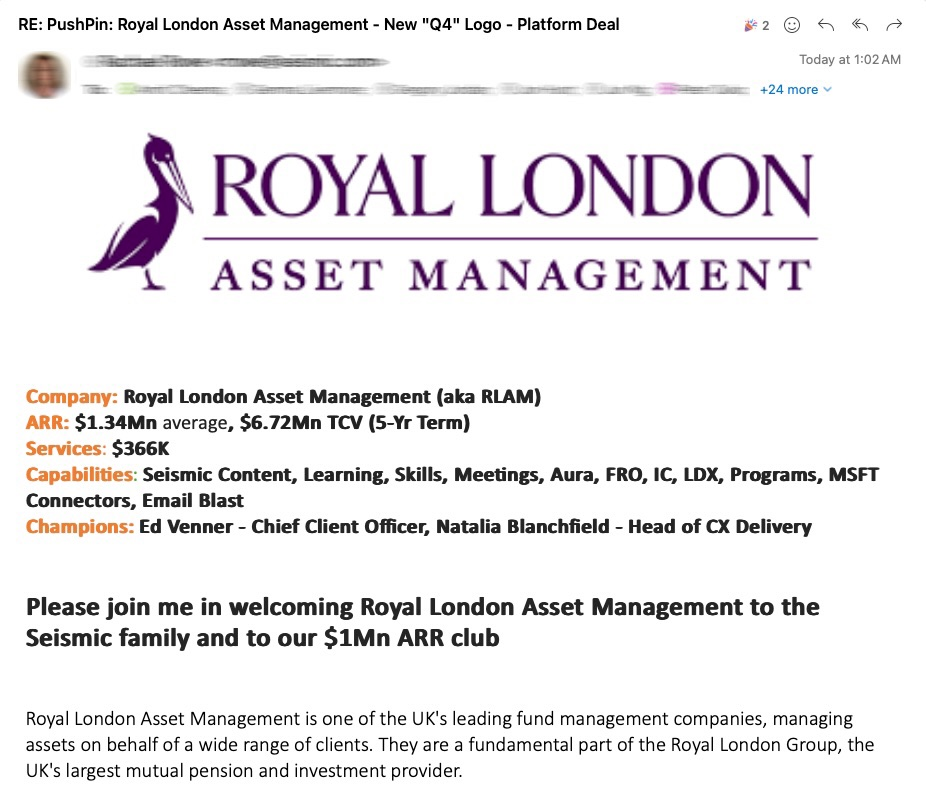
The longer-lasting result is the pattern. The answer anatomy, the honesty lines and the gradient signature from this project became the reference for later Aura surfaces, including Aura on mobile.
What I'd do differently
- Instrument the pilot properly. Thumbs up/down was in V1, but we didn't define in advance what rate would count as good. Too much of V2 was argued from session recordings rather than a number I could point to.
- Design the failure state first. The most important screen in an AI product is the one where it can't answer. We designed the happy path and patched the edge. Starting from I can't answer that, but here's what I can would have exposed the scope problem weeks earlier.
- Bring the data team into design reviews from the start. The suggested questions only work if they're the ones the dataset answers best. That list should have been co-owned from the concept stage, not handed over near the pilot.
The broader lesson is that in conversational AI the interface's job is less to present answers than to set expectations. Every decision that mattered here — the narrower copy, the starter questions, the folded SQL, the caution line — was about telling the user honestly what they were talking to.